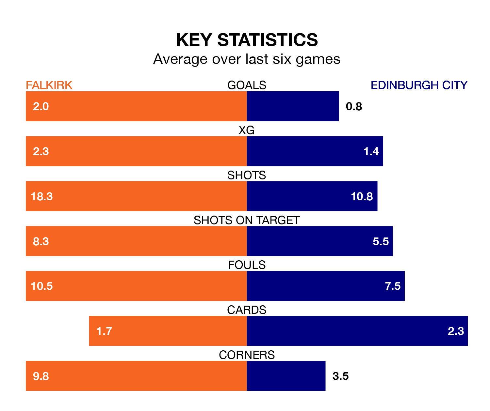

Relegation candidates Edinburgh City face a challenge away against high-flying Falkirk at the Falkirk Community Stadium on Saturday.
Edinburgh City are rooted to the bottom of the League One table, and have picked up just two wins and five draws in their 29 games to date.
The Bairns, meanwhile, are top of the standings with 75 points, having won 23 and drawn six.
With 71 goals in 29 games so far this season, Falkirk are the league's highest scorers with 2.4 goals per game. And they are conceding fewer than average, letting in 18 goals at a rate of 0.6 per game.
Edinburgh, meanwhile, are below average scorers, with 1.1 goals per game, compared to a league average of 1.6. They have conceded 2.8 goals per game.
The Bairns are in fantastic form in League One, with five wins and a draw from their last six games.
With no wins and a draw over that period, City's form is much worse – they have taken one point from 18, compared to the hosts' 16.
With Sam Long between the sticks, Falkirk can rely on one of the league's safest pair of hands. He has kept nine clean sheets in his 17 appearances this season, and no 'keeper has prevented the opposition scoring more often in League One.
In the away team's net, Andrew McNeil has one clean sheet in nine games. He has conceded a goal every 34 minutes, four times as often as the 153 minutes between goals for Long.
In the last 10 years, Falkirk and Edinburgh have played each other on eight occasions. Falkirk won five of them, Edinburgh two, and they drew once.
On average, the Bairns scored 1.8 goals and Edinburgh 1.1 in those matches.
Their last meeting was on January 13, when they played out a 2-2 draw.
Falkirk's last match was on Saturday, a 4-1 win against Queen of the South, with Callumn Morrison (two), Aidan Nesbitt and Liam Henderson getting the goals for the Bairns.
Edinburgh lost 5-2 against Alloa Athletic last time out, also on March 16, with Frankie Deane and Malek Zaid on the scoresheet.
Updated: 10:19 (UTC), 22/03/24